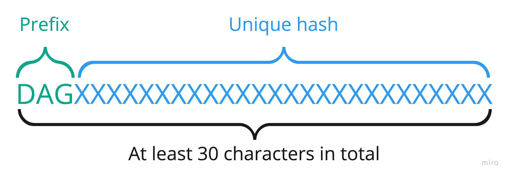
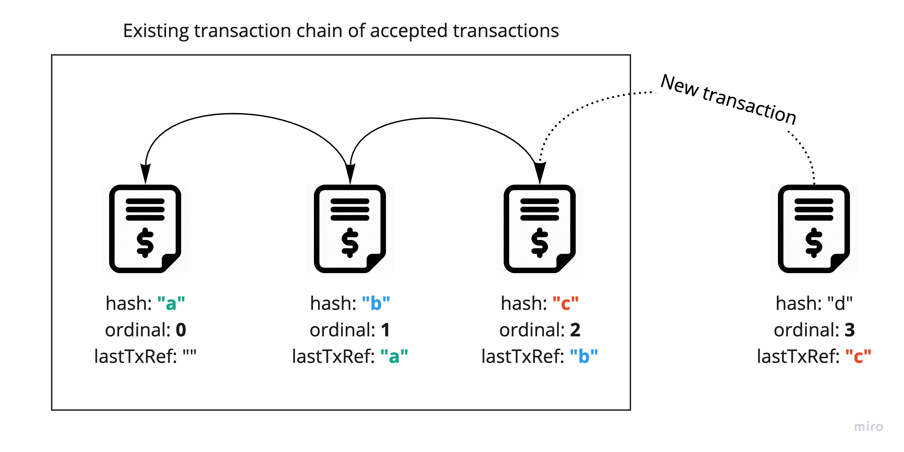

Transaction Validation
Each transaction sent to cluster needs to be validated before proposing it to block/consensus.
Part of code responsible for validation is in TransactionValidator.scala.
Source signature validation
Sender needs to sign transaction by using his private key. Signature of transaction needs to ensure following things:
- transaction has been signed by known sender
- sender can't deny signing the transaction
- nobody altered transaction
Validation checks in collection of validation signatures about the edge called signatureBatch if there
is such address which equals source address and compares hash with signaturesHash
Destination address validation
Valid destination wallet address (receiver of tokens) must match the following conditions:
- Can't be empty
- Must have
DAGprefix - Must have at least
30characters length - Must be different from source address

The validation of address emptiness happens in validateEmptyDestinationAddress which just checks if address is not empty.
In case of failure it returns EmptyDestinationAddress validation result.
If address is not empty then validateDestinationAddress is triggered which checks the prefix, length and compares
source address with destination address. In case of failure it returns InvalidDestinationAddress.
Token amount validation
Each transaction contains information about number of tokens to transfer from source address to destination address. The way of validating amount of token differs between dummy and non-dummy transactions.
When dummy transaction fails:
- Number of tokens different than
0. It is because dummy transaction should not change any of balances so0is expected there. In case of failure it returnsNonZeroAmountvalidation result.
When non-dummy transaction fails:
0tokens, in opposite to dummy transaction we must provide positive number of tokens. It causesNonPositiveAmount.- Negative number of tokens. It causes
NonPositiveAmountas well. - Number of tokens bigger than maximum value of
Longwhich causesOverflowAmountvalidation result.
Amount is validated in validateAmount method.
Fee validation
For fee, we apply similar validation rules as we apply to non-dummy transactions.
Transaction does not need to have fee at all but if it exits it can't be:
- Equal to 0 (because then transaction should not include fee at all). It causes NonPositiveAmount.
- Negative number of tokens. It causes NonPositiveAmount as well.
Duplicated transaction validation
Each transaction is unique (identified by unique hash) so sending same transaction twice should fail.
Each of nodes stores list of already accepted transactions and sending already accepted one fails with HashDuplicateFound.
Validation is being triggered in validateDuplicate method.
Last transaction reference validation
All transactions sent from particular source address form chain structure where each transaction stores a reference to
previous transaction (lastTxRef field).
There is also ordinal field which stores ordinal number which is the index of transaction
according to the order.
That being said all the transactions need to form a chain by keeping reference to previous transaction
and incrementing the ordinal number. The only exception for that statement is the very first transaction
because it must have lastTxRef empty (because there is no previous transaction) and ordinal set to 0
(because we start indexing from 0).
Each of nodes stores information about last accepted transaction for each wallet address and validates
received one against it. Validation happens in validateLastTransactionRef and checks couple of things depending on
if it is first transaction or one of next ones.

For very first transaction:
- if
ordinalis set to0 - if
lastTxRefis empty
For each next transaction:
- if
lastTxRefis not empty - if
lastTxRefpoints to last accepted transaction for that address (to check if transaction chain has no gaps) - if
ordinalhas been incremented properly (it should be+1to previousordinalnumber)